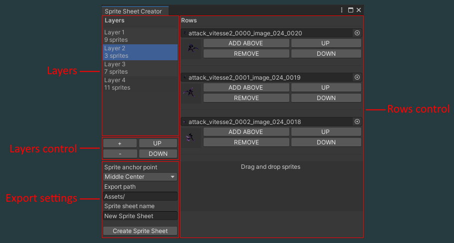

Usage
Open the Sprite sheet creator tool with "Tools > Sprite Sheet Creator".

Layers section
Select the layer you want to modify in this section. Its content is then displayed in the Rows section.
Layers control section
" + " Add a new layer at the end of the layers list.
" - " Remove selected layer.
"UP" Move the selected layer up.
"DOWN" Move the selected layer down.
Rows control section
You can replace any sprite in the list in the texture field.
"ADD ABOVE" Add a new empty sprite field above the selected one.
"REMOVE" Remove the selected sprite.
"UP" Move the selected sprite up.
"DOWN" Move the selected sprite down.
"Drag and drop sprites" Drag and drop your project's sprites to add them at the bottom of the list.
Export settings section
"Sprite anchor point" If a sprie is smaller than the other sprites, select the anchor point to apply to this sprite.
"Export path" Path to the output sprite sheet.
"Sprite sheet name" Name of the generated sprite sheet.
"Create Sprite Sheet" Click this button to generate your sprite sheet. Empty layers and sprites are removed from the generated sprite sheet. Creation can take some time depending on the size of the output texture.